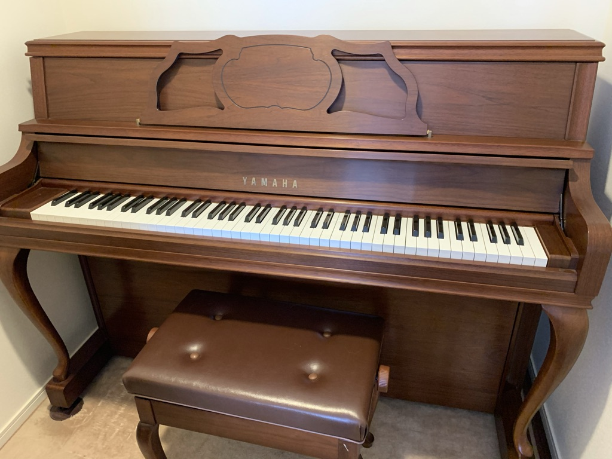
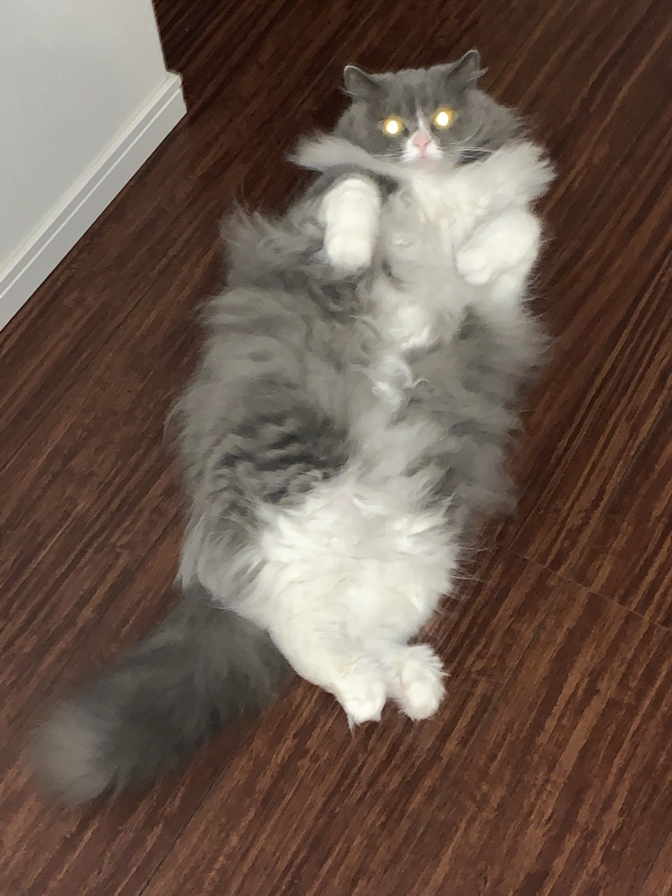

裕司の老後へ
敦子の老後
今日まで道のり
年齢は㊙
なんだかんだで今日まで来た感じ。
これからどうする？
最近、考えるword。
まずは息子から教わるWEBのプログラミングを毎日、続けることかな。先行投資をしてMac
Book Proを買った。
これが結構、面白いが私の理解力がどこまで追いていけるか？が問題。
そしてピアノの練習をコンスタントにすること。
今はモーツァルトに夢中だがやはりモーツァルトは難しい。譜読みはスラスラ出来るがスラスラ弾けない。でもモーツァルトは天才だと弾いていてつくづく思う。
まだまだ弾きたい曲は山ほどある。ボチボチ取り組む予定。

息子が東京へ引っ越した。コロナ禍だったが一緒に行き、無事、引っ越し完了！
時間がまた増えた。ピアノもプログラミングも（家の片付けも）ボチボチ頑張ります。
「ボチボチ」・・・
よく使っているのに気がついた。
さあ、余生の始まりです。
息子が東京に行って一人でプログラミングの勉強をしていたら最初からつまずき、次に進めない。夜、質問をまとめて聞くためにGooglemeetってので息子に私の画面を共有してもらい解決。でもまた同じ箇所でつまずく。
多分、イヤ絶対、私は根本が理解出来てないのだ。何度もProgate
を復習して言語に慣れることからやってみた。
つくづく、プログラミングは奥が深いと思う今日この頃。

ウチの次女の猫、くぅ〜ちゃんもおばけポーズで応援してくれてます。→→→→
何事も一気に頑張ろうとしてもなかなか思うようには進まない事は今回のプログラミングの勉強でもつくづく身に沁みる。ピアノの練習もそうだ。弾きたい曲が決まったらまずはゆっくりイメージしながら譜読み。スラスラ弾きたい気持ちばかり先走り、落ち込むが気持ちを切り替えて半月後、少しでも流暢に弾けるように毎日、練習を重ねる。ほら、10日もしたらなんとなく『らしく』弾ける。
「らしく」弾けたら15年以上、お世話になっているピアニストのY先生にレッスンの予約をお願いし、仕上げに向けて集中する。とても指導の素晴らしい先生だが、なかなかご指摘通りに弾けない私。「次は頑張ろう。」と先生宅を出る時に思うけどまた次がやって来る。